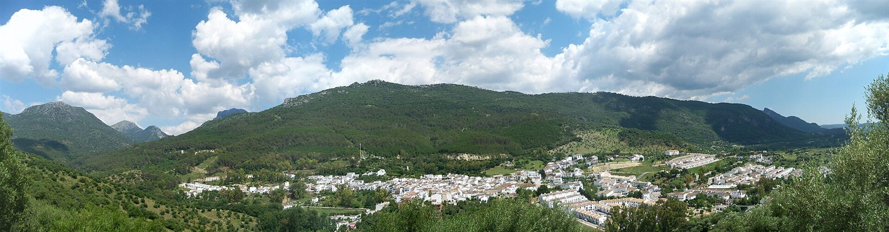

ALOJAMIENTO RURAL · EL BOSQUE, CÁDIZ
La Casita de El Bosque
Cuatro dormitorios. Una estancia en la Sierra de Cádiz.
DENTRO DE LA CASITA
La casa, de un vistazo.
Cuatro dormitorios, salón y cocina. Terraza, jardín y piscina exterior de temporada.
Tres baños publicados; la anfitriona detalla dos baños y un aseo. Confirma los dormitorios habilitados con tu reserva.
ESPACIOS PARA TU ESTANCIA
Recorre la casa.
Desliza para recorrer · Pulsa una fotografía para ampliarla
FOTOGRAFÍAS DE LA VIVIENDA
Conócela en su ficha de Booking.
Exterior, habitaciones y espacios interiores del alojamiento.
- Dormitorios
- Salón
- Cocina
- Baños
- Terraza y jardín
LO QUE ENCONTRARÁS
Los detalles prácticos.
- Cocina equipada
- Wi-Fi
- Aire acondicionado
- Parking gratuito anunciado
- Terraza y jardín
- Piscina de temporada
Si vienes con mascota
Se admiten según condiciones y pueden aplicarse suplementos. Consulta tu estancia en Booking.
Piscina y exteriores
Confirma las fechas de apertura de la piscina y las condiciones de acceso antes de reservar.
Equipamiento contrastado con la ficha del alojamiento ↗.
FUERA DE CASA
El Bosque. Sierra de Cádiz.
Paseos por el pueblo y gastronomía local.
Para el sendero del Majaceite, consulta el estado y los accesos.

TU ESTANCIA
Elige tus días.
Consulta tu estancia.
Fechas, tarifas y condiciones en Booking.
Consultar disponibilidadCÓMO LLEGAR
La Casita de El Bosque8 Los Membrillos
11670 El Bosque, CádizBuscar en Google Maps ↗
Confirma la llegada y las llaves con quien gestione tu reserva.